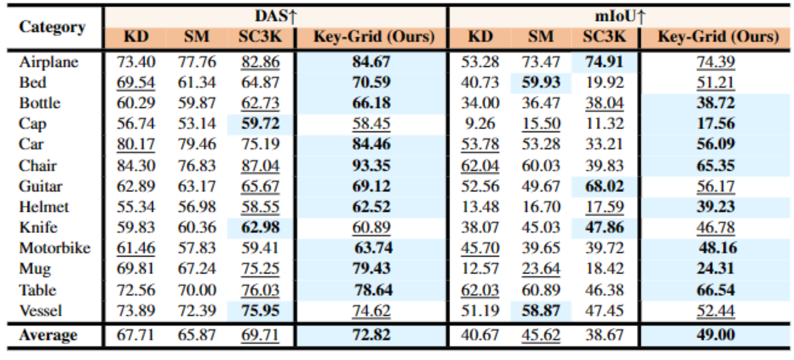

In this paper, we introduce an innovative unsupervised keypoint detector Key-Grid for both the rigid-body and deformable objects, which is an autoencoder framework. Unlike previous work, we leverage the identified keypoint information to form a 3D grid feature heatmap called grid heatmap, which is used in the process of point cloud reconstruction.
Grid heatmap is a novel concept that represents the latent variables for grid points sampled uniformly in the 3D cubic space, where these variables are the shortest distance between the grid points and the “skeleton” connected by keypoint pairs. Meanwhile, we incorporate the information from each layer of the encoder into the reconstruction process of the point cloud. We conduct an extensive evaluation of Key-Grid on a list of benchmark datasets. Key-Grid achieves the state-of-the-art performance on the semantic consistency and position accuracy of keypoints. Moreover, we demonstrate the robustness of Key-Grid to noise and downsampling. In addition, we achieve SE-(3) invariance of keypoints though generalizing Key-Grid to a SE(3)-invariant backbone.

Fold Clothes and Pants
Note : we compare Key-Grid with other baselines (KD: KeypointDeformer, SM: Skeleton Merger, SC3K).

Comparative DAS and mIoU score: Key-Grid vs. State-of-the-Art Approaches on the ShapeNetCoreV2 dataset.
Comparative DAS score: Key-Grid vs. State-of-the-Art Approaches on the ClothesNet dataset.
@article{hou2023keygrid,
author = {Chengkai Hou, Zhengrong Xue, Bingyang Zhou, Jinghan Ke, Shao Lin and Huazhe Xu},
title = {Key-Grid: Unsupervised 3D Keypoints Detection using Grid Heatmap Features},
journal = {Arxiv},
year = {2023},
}